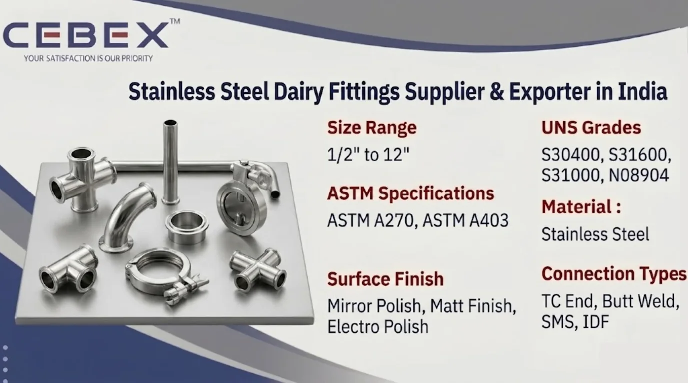

Leading Supplier & Exporter of Stainless Steel Dairy Fittings
Stainless Steel Dairy Fittings are widely used in dairy processing plants, food processing industries, beverage industries, pharmaceutical manufacturing, breweries, biotechnology facilities, and sanitary process systems because of their superior corrosion resistance, hygienic surface finish, leak-proof connections, and excellent cleanability. As a leading Stainless Steel Dairy Fittings Supplier & Exporter in India, CEBEX STEEL INDIA supplies premium-quality sanitary stainless steel dairy fittings manufactured according to international ASTM, DIN, SMS, IDF, ISO, and 3A standards for hygienic and sterile processing applications.
Our Stainless Steel Dairy Fittings are extensively utilized in milk processing plants, food manufacturing systems, beverage transfer pipelines, pharmaceutical process equipment, CIP systems, cosmetic processing facilities, and sanitary fluid transfer applications where contamination-free operation and hygienic piping performance are essential. We supply stainless steel dairy bends, tees, reducers, unions, ferrules, clamps, SMS fittings, IDF fittings, TC fittings, nipples, valves, and customized sanitary piping components according to industrial project specifications and hygienic processing standards.
As experienced traders and exporters of Stainless Steel Dairy Fittings in India, we provide high-quality sanitary process fittings suitable for hygienic fluid handling applications requiring smooth internal finish, bacteria-resistant surfaces, easy cleaning capability, and superior corrosion protection.
At CEBEX STEEL INDIA, we utilize advanced forging, CNC machining, polishing, orbital welding, and precision finishing technologies to supply Stainless Steel Dairy Fittings with excellent dimensional accuracy, mirror finish surfaces, and dependable hygienic performance. Our products are trusted by dairy industries, food processing companies, pharmaceutical manufacturers, beverage plants, engineering contractors, and industrial buyers across India, Africa, the Middle East, Europe, and Southeast Asia.

Selecting the right Stainless Steel Dairy Fittings supplier is essential for ensuring hygienic performance, corrosion resistance, dimensional precision, leak-proof installation, and long-term operational reliability. CEBEX STEEL INDIA has established itself as a trusted Stainless Steel Dairy Fittings Supplier & Exporter in India through strong technical expertise, strict quality control systems, and dependable worldwide export capabilities.
We maintain complete traceability from raw material procurement to finished fitting dispatch and provide all materials with EN 10204 3.1/3.2 Mill Test Certificates, inspection reports, surface finish reports, and export documentation. Our in-house quality department performs comprehensive inspection procedures including chemical analysis, PMI testing, dimensional inspection, ferrite testing, roughness testing, hydrostatic testing, and surface finish verification to ensure compliance with ASTM and customer project specifications.
Our export logistics team efficiently manages seaworthy packaging, export documentation, and international shipping for smooth global deliveries.
Our Stainless Steel Dairy Fittings are manufactured using premium-quality stainless steel raw materials sourced from approved mills and processed through advanced sanitary manufacturing technologies to ensure superior corrosion resistance, hygienic finish, and long operational life.
| Feature | Specification / Detail |
|---|---|
| Standards | ASTM, DIN, SMS, IDF, ISO, 3A |
| ASTM Specifications | ASTM A270, ASTM A403 |
| Stainless Steel Grades | 304, 304L, 316, 316L |
| UNS Grades | S30400, S30403, S31600, S31603 |
| Size Range | 1/2" to 12" |
| Fitting Types | Bends, Tees, Reducers, Ferrules, Clamps, Unions |
| Connection Types | TC End, SMS, IDF, RJT, Butt Weld |
| Surface Finish | Mirror Polish, Matt Finish, Electro Polish |
| Surface Roughness | Ra < 0.8 –m |
| Manufacturing Process | Forged, CNC Machined, Polished |
| Documentation | EN 10204 3.1/3.2, MTC, Inspection Reports |
We supply a comprehensive range of Stainless Steel Dairy Fittings suitable for hygienic process piping systems and sanitary fluid transfer applications. Our product range includes dairy bends, equal tees, reducers, ferrules, clamps, unions, TC fittings, SMS fittings, IDF fittings, RJT fittings, nipples, hose fittings, end caps, dairy valves, and custom sanitary process fittings.
We also supply electro-polished dairy fittings, mirror finish fittings, orbital welded sanitary fittings, and customized hygienic piping components according to customer drawings and process plant requirements.
Material selection plays a critical role in determining corrosion resistance, hygienic performance, cleanability, and long-term service life. We supply Stainless Steel Dairy Fittings in internationally approved sanitary grades suitable for highly demanding food and pharmaceutical operating environments.
| Stainless Steel Grade | UNS Number | Typical Applications | Standards |
|---|---|---|---|
| SS 304 | S30400 | Dairy & Food Processing | ASTM A270 |
| SS 304L | S30403 | Hygienic Welding Applications | ASTM A270 |
| SS 316 | S31600 | Pharmaceutical & Beverage Industries | ASTM A270 |
| SS 316L | S31603 | High Purity Process Systems | ASTM A270 |
All materials are sourced from reputed mills and supplied with complete traceability, inspection reports, and EN 10204 3.1/3.2 Mill Test Certificates.
Every Stainless Steel Dairy Fitting supplied by CEBEX STEEL INDIA includes complete chemical composition and mechanical property reports to ensure compliance with international standards and hygienic process requirements.
| Element | Composition (%) |
|---|---|
| Chromium (Cr) | 18.0 – 20.0 |
| Nickel (Ni) | 8.0 – 10.5 |
| Carbon (C) | 0.08 Max |
| Manganese (Mn) | 2.0 Max |
| Silicon (Si) | 1.0 Max |
| Iron (Fe) | Balance |
| Property | Value |
|---|---|
| Tensile Strength | 515 MPa Min |
| Yield Strength | 205 MPa Min |
| Elongation | 40% Min |
| Hardness | 92 HRB Max |
| Element | Composition (%) |
|---|---|
| Chromium (Cr) | 16.0 – 18.0 |
| Nickel (Ni) | 10.0 – 14.0 |
| Molybdenum (Mo) | 2.0 – 3.0 |
| Carbon (C) | 0.03 Max |
| Iron (Fe) | Balance |
| Property | Value |
|---|---|
| Tensile Strength | 485 MPa Min |
| Yield Strength | 170 MPa Min |
| Elongation | 40% Min |
| Hardness | 95 HRB Max |
Our quality department conducts spectrographic analysis, roughness testing, PMI testing, dimensional inspection, ferrite testing, and visual surface verification using calibrated inspection equipment.
We manufacture and supply Stainless Steel Dairy Fittings according to internationally approved sanitary and hygienic piping standards to ensure interchangeability, cleanability, and contamination-free performance.
| Standard | Description |
|---|---|
| DIN 11851 | Hygienic Dairy Fittings |
| SMS 1145 | Swedish Dairy Standard |
| IDF | International Dairy Federation |
| RJT | Ring Joint Type Fittings |
| 3A Standards | Hygienic Food & Pharma Systems |
| ISO Standards | Sanitary Piping Systems |
| Connection Type | Application |
|---|---|
| Tri Clamp (TC) | Pharmaceutical & Food Industries |
| SMS Union | Dairy Processing Systems |
| IDF Union | Hygienic Fluid Transfer |
| Butt Weld | Permanent Sanitary Pipelines |
Stainless Steel Dairy Fittings provide excellent resistance to corrosion, food acids, chemicals, moisture, and cleaning agents used in hygienic processing systems. Austenitic stainless steel grades such as SS 304 and SS 316 offer smooth non-porous surfaces that prevent bacterial contamination and ensure easy cleaning during CIP and SIP operations.
SS 316 and SS 316L dairy fittings provide enhanced resistance to chlorides, acidic cleaning solutions, and aggressive processing chemicals because of their molybdenum content, making them ideal for pharmaceutical manufacturing, beverage processing, and high-purity sanitary systems.
Mirror polished and electro-polished surfaces further improve hygienic performance by minimizing bacterial adhesion and simplifying cleaning procedures.
Our Stainless Steel Dairy Fittings are extensively used in industries requiring hygienic fluid handling, corrosion resistance, and contamination-free processing systems. Dairy industries utilize stainless steel sanitary fittings for milk processing lines, cream transfer systems, pasteurization units, and hygienic storage systems.
Food and beverage industries use stainless steel dairy bends, ferrules, and unions for sanitary transfer pipelines, process systems, and hygienic production equipment. Stainless Steel Dairy Fittings are also widely used in pharmaceutical industries, breweries, biotechnology plants, cosmetic manufacturing facilities, water treatment systems, and clean process engineering applications.
Quality assurance is one of the core strengths of our manufacturing and export operations. Every Stainless Steel Dairy Fitting undergoes strict inspection and testing procedures including dimensional inspection, chemical analysis, PMI testing, hydrostatic testing, roughness testing, ferrite testing, visual inspection, and surface finish verification.
Our quality control department utilizes advanced inspection equipment including spectrometers, roughness testers, ferrite meters, dimensional measurement systems, hydrostatic testing equipment, and polishing inspection tools to ensure compliance with ASTM, DIN, SMS, IDF, ISO, and customer project requirements.
We supply all products with EN 10204 3.1 Mill Test Certificates, EN 10204 3.2 certification, third-party inspection reports, surface finish reports, and complete raw material traceability documentation.
We understand the importance of contamination-free packaging and timely delivery for hygienic and export projects. Our Stainless Steel Dairy Fittings are packed using export-grade boxes, bubble wrapping, HDPE packaging, plastic end protection, and seaworthy packaging systems to ensure complete protection during transportation and storage.
Our export logistics department manages complete shipping documentation including commercial invoices, packing lists, certificates of origin, mill test certificates, and inspection reports for smooth customs clearance and worldwide shipping.
As a leading Stainless Steel Dairy Fittings Supplier & Exporter in India, we have built a strong reputation for supplying high-quality Stainless Steel Dairy Fittings to major food processing, pharmaceutical, and industrial projects across Africa. Our export team understands the unique requirements of African industries and ensures smooth, timely deliveries with complete documentation, inspection compliance, and international export support. From dairy processing plants and beverage facilities to pharmaceutical manufacturing systems and hygienic process industries, our Stainless Steel Dairy Fittings are trusted by clients in Nigeria, Egypt, Kenya, South Africa, Ethiopia, and beyond.
In addition to Stainless Steel Dairy Fittings, we also manufacture and export Copper Nickel Buttweld Pipe Fittings, Stainless Steel Buttweld Pipe Fittings, Duplex Buttweld Pipe Fittings, Super Duplex Buttweld Pipe Fittings, Inconel Buttweld Pipe Fittings, Hastelloy Buttweld Pipe Fittings, and Titanium Buttweld Pipe Fittings. These high-performance alloy buttweld fittings are engineered for demanding industrial applications requiring superior corrosion resistance, high mechanical strength, thermal stability, and long-term operational reliability under aggressive service conditions.
Our technical team is available to help you choose the ideal material and fitting specifications for your project. Browse our full range:
Our clients choose CEBEX STEEL INDIA for our technical expertise, commitment to quality, and responsive service. We offer direct-from-manufacturer pricing, flexible order quantities, and comprehensive after-sales support. Our engineering team is available to assist with material selection, specification review, and custom design, ensuring that you receive the optimal solution for your application.
Stainless Steel Dairy Fittings are used in hygienic piping systems for dairy processing, food production, beverage manufacturing, pharmaceutical plants, breweries, and sanitary fluid transfer applications.
SS 304, SS 304L, SS 316, and SS 316L are the most commonly used grades for dairy fittings because of their excellent corrosion resistance and hygienic properties.
We supply dairy fittings in mirror polish, matt finish, and electro-polished finishes with surface roughness below Ra 0.8 –m for hygienic applications.
Yes, our Stainless Steel Dairy Fittings comply with ASTM, DIN, SMS, IDF, ISO, and 3A sanitary standards.
Yes, all Stainless Steel Dairy Fittings are supplied with EN 10204 3.1/3.2 Mill Test Certificates, inspection reports, and complete traceability documentation.